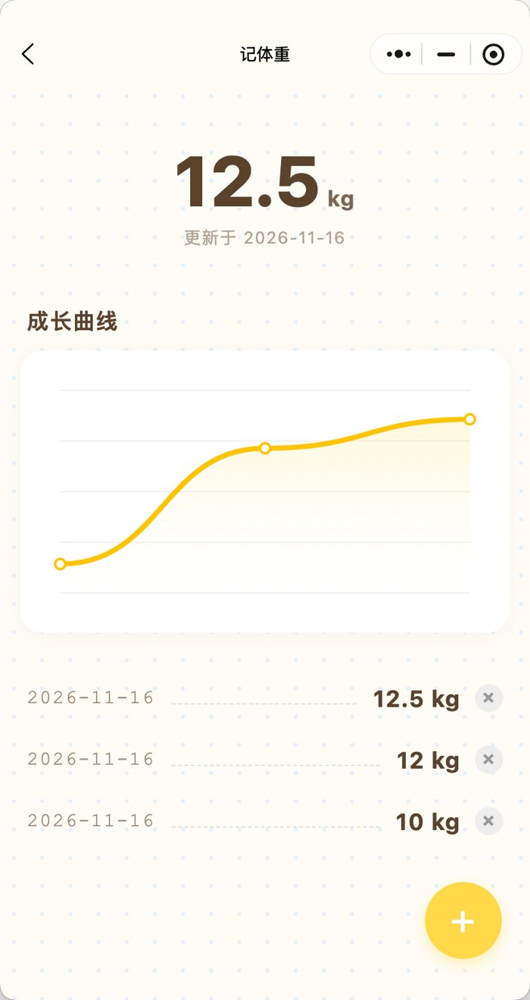
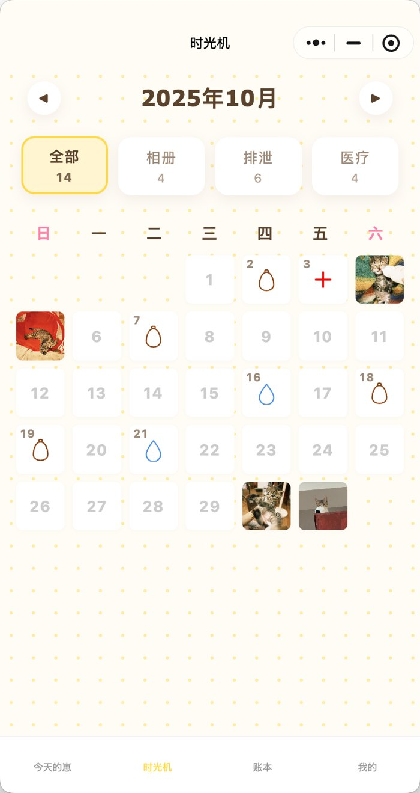
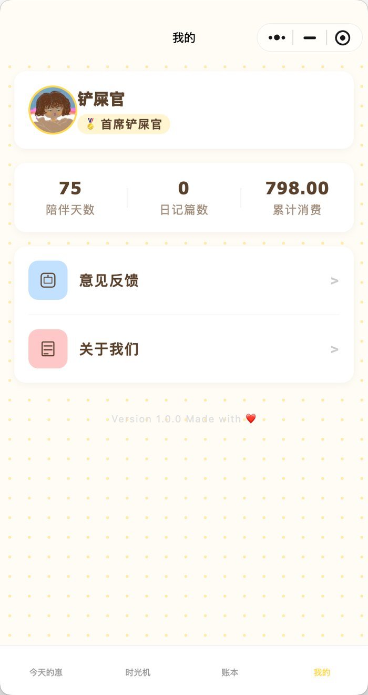

Pet Diary · WeChat mini program
A record-keeping tool for pet owners. The problem: deworming, vaccines, weight and spending are scattered across notes and chat logs, and you forget when the next one is due. Built as a mini program: the home page logs today, the medical kit counts days since the last deworming, weight is drawn as a growth curve, the ledger totals by category, and the time machine lets you look back at photos and records by calendar. Requirements, UI and code were all done with Trae AI; not a single line was hand-written.Video of building it from zero ↗
How it works
A designer ships a live product alone, with AI
BeforeCan design, can't code, can't build a mini programAfterSpell out the requirements and screens, AI writes the code, iterate until it ships
01Requirements and screens👤 Human
- Set the features: diary, medical kit, weight, notes, time machine, ledger; set the style: warm colors, rounded corners, sticker feel
02Generate and adjust🤖 AI + 👤
- Trae AI generates pages and logic; check each page, tweak details, and have it rewrite when it's wrong
03Launch👤 Human
- WeChat mini program review and release; I use it every day
What it looks like





